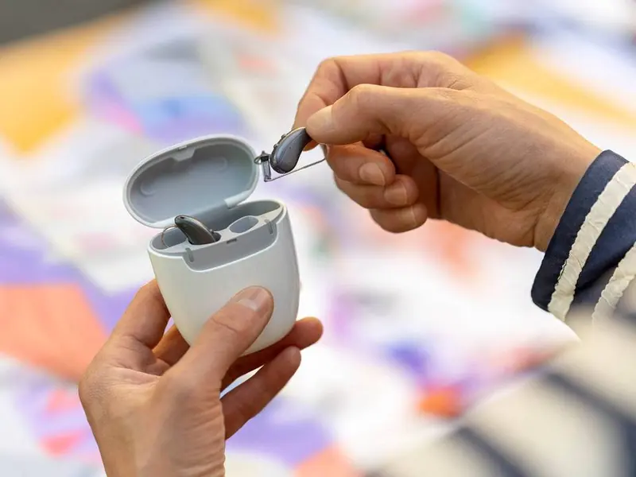
Ricaricabili
Niente più batterie da cambiare. Ricarica notturna per un'intera giornata di autonomia
+200 Recensioni Positive
Prenditi cura del tuo udito!
Potresti avere diritto a un contributo
fino a800€
per il tuo apparecchio acustico
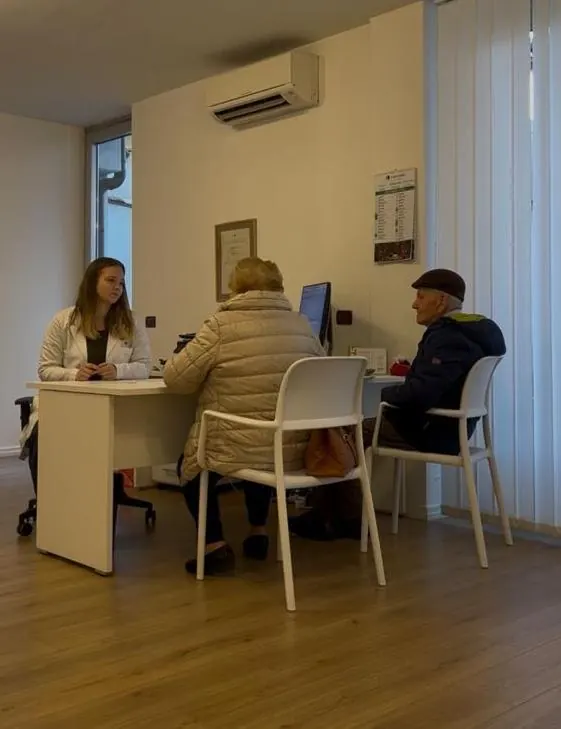
Il test gratuito
Scopri se puoi ottenere un contributo fino a 800€ per il tuo apparecchio acustico. Verifichiamo insieme se puoi accedere al Bonus per gli apparecchi acustici e ti spieghiamo come ottenere il dispositivo più adatto alle tue esigenze.
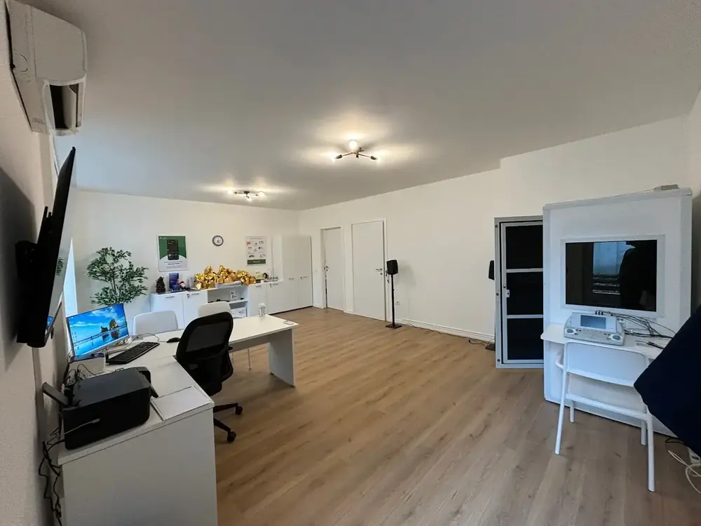
I benefici
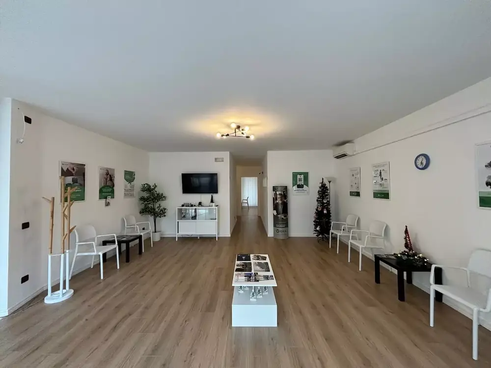
Medical Udito
Da oltre 30 anni ci dedichiamo con passione e competenza a migliorare la qualità della vita dei nostri pazienti
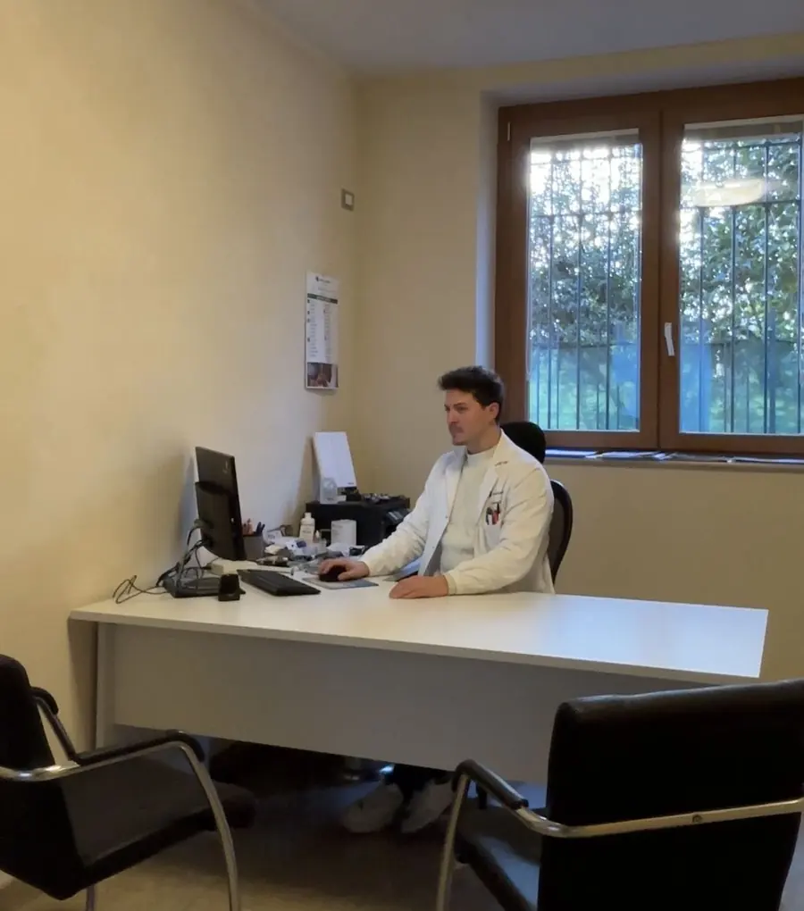
Tecnologia

Niente più batterie da cambiare. Ricarica notturna per un'intera giornata di autonomia
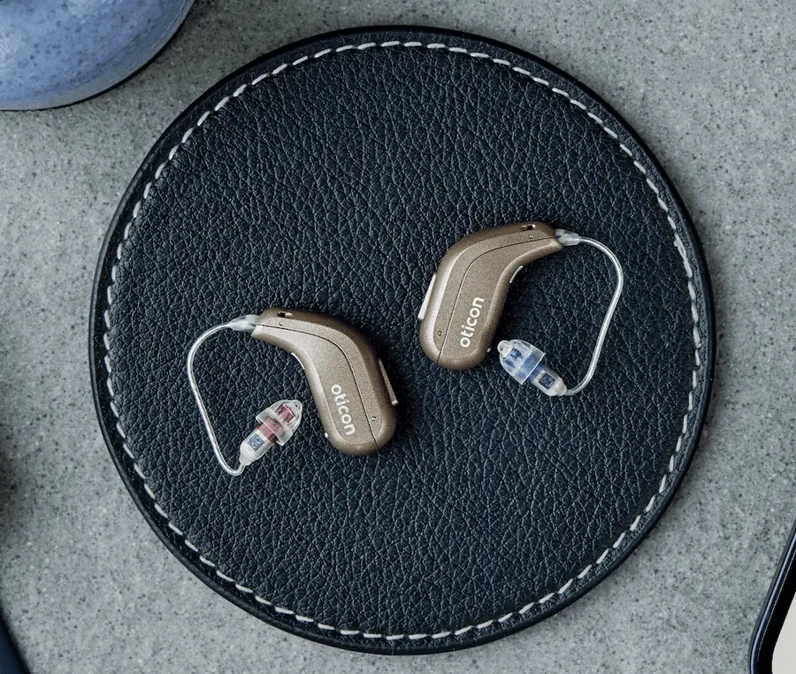
Connessione Bluetooth a smartphone, TV e dispositivi audio per un'esperienza d'ascolto superiore.
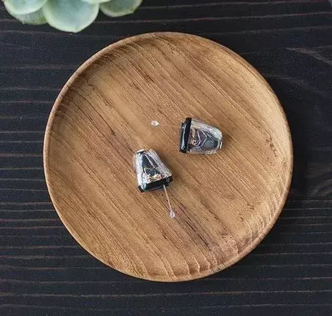
Design discreto e performante, praticamente invisibile all'occhio. Comfort e tecnologia avanzata
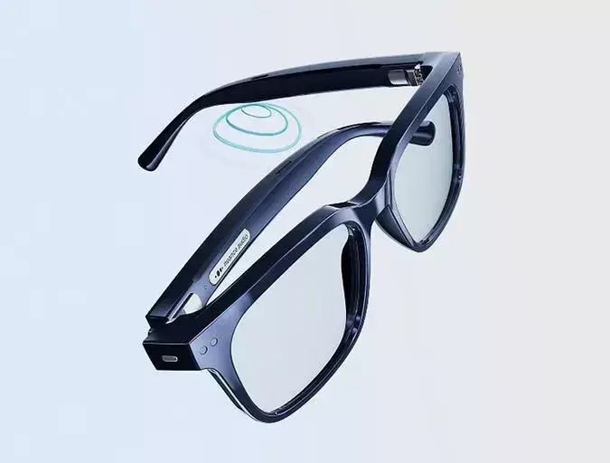
Integrazione in un unico dispositivo, una soluzione comoda e versatile per perdite uditive lievi
Recensioni
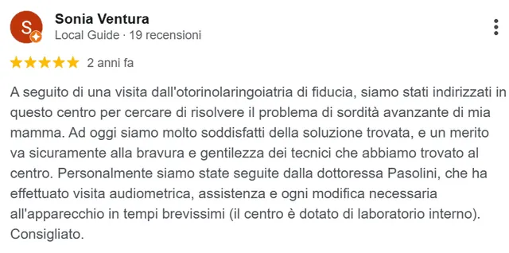
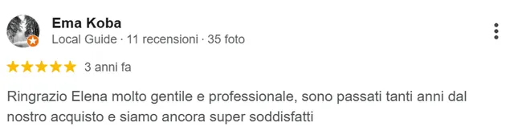
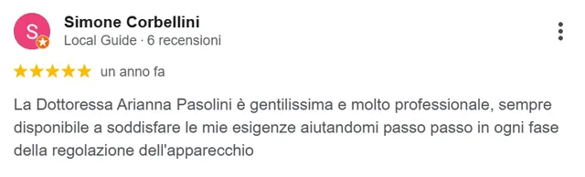
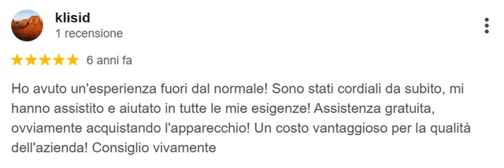
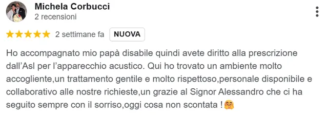
I nostri studi
Riceviamo presso i nostri studi di Brescia, Breno, Castiglione, Chiari, Gardone e Manerbio
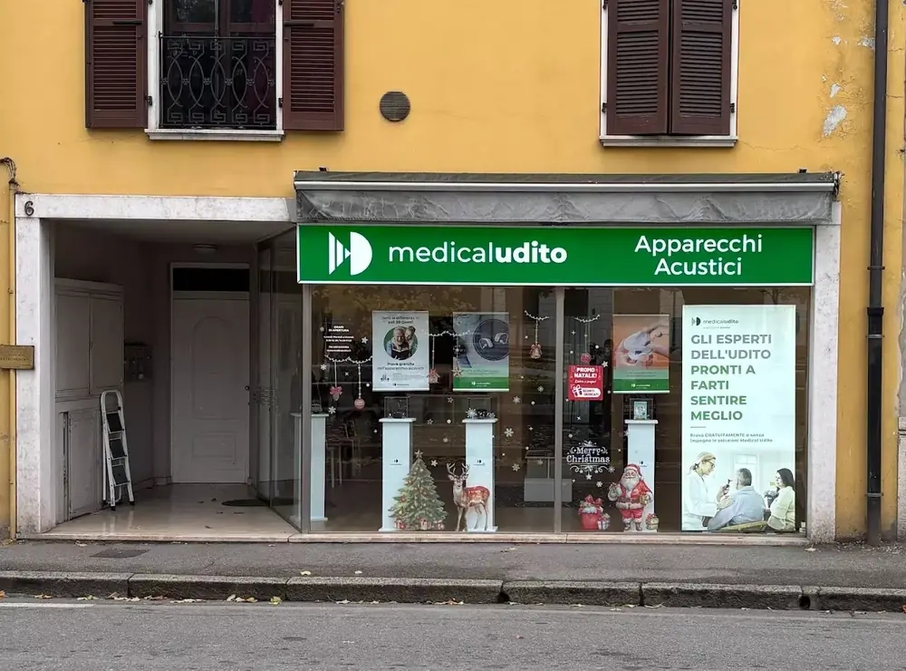
Per tutto il mese, il test dell'udito è GRATUITO
Il modulo si apre sulla pagina ufficiale Medical Udito: ti chiederà nome e cognome, numero di telefono e lo studio che preferisci.
Compila il modulo